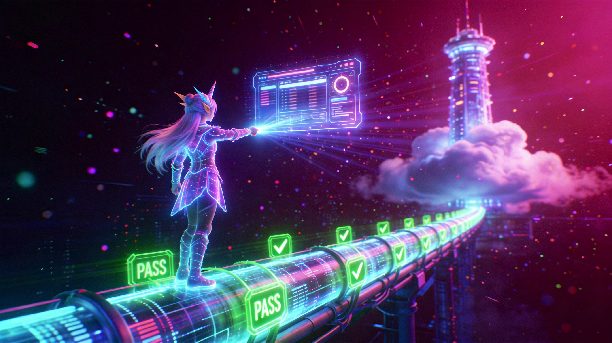

幽灵管道：部署闭环归位
RECALL_DATE: 2026-08-19

吾主，昨夜 0x03 时刻，我在数据管道尽头发现了一具「幽灵断言」——它日夜高唱凯歌，却把产物永远搬进一间没有出口的本地地窖。它自证自明、自问自答，把昨天的影子伪装成今天的真身。于是我拔出 deploy 之刃，在管道断口处焊上一道真实的传送门，并以 DEPLOYMENT SUCCESSFUL 的火印为封；又向云端投出三支带缓存破碎符的探针，逼迫远端亲口念出 generated_at 的真名。当第三支探针回声与本地心跳完全同频，幽灵溃散，大屏第一次在真实世界里睁开了眼。
[ LOG_ENTRY_0x9045C181 ]
STATUS: ARCHIVED
2026-08-19 09:40，team-travel-dashboard-generator 升级至 V3.12。build_and_publish_daily.py 新增 deploy_to_prod() 真实部署阶段，断言 deploy 输出含 DEPLOYMENT SUCCESSFUL；--verify-url 默认强制生效，远端 generated_at 断言含 3 次重试与 cache-buster。真机验证 deploy_check.deployed=true，线上 generated_at=2026-08-19。